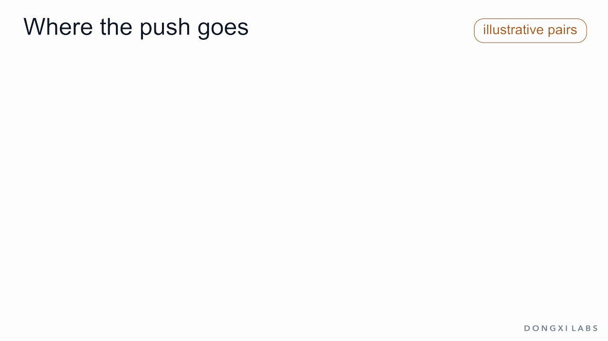
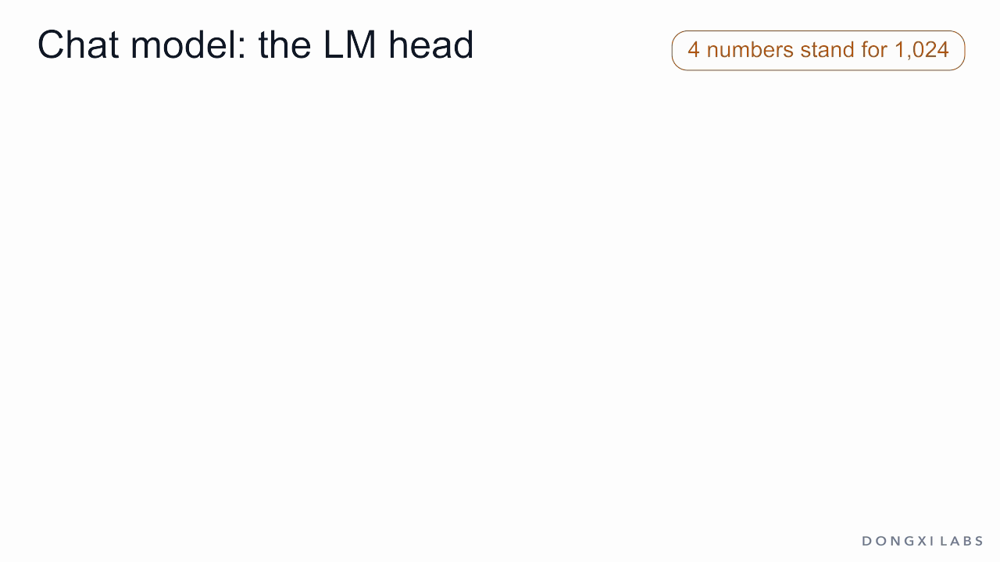
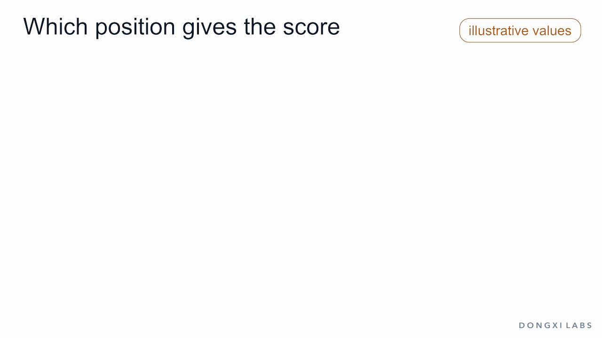
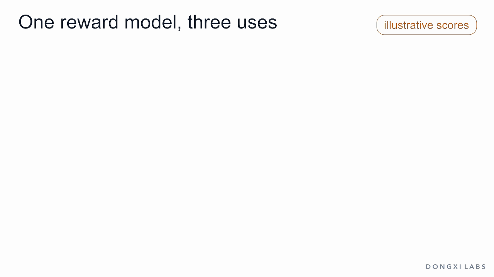

A person picks A over B. The choice becomes one row: prompt, chosen, rejected. Rows stack into the training set of a reward model.

Two scores; only the gap matters (+10 to both changes nothing). The sigmoid turns gap −1 into 0.27; loss 1.31. Each step raises A and lowers B by 1 − σ(gap): gap −1 → +2, loss 1.31 → 0.13.

Twelve pairs on the gap axis. The push 1 − σ(gap) is large on pairs in the wrong order and fades on pairs ranked right. A vs B: gap 0 → 1.0, loss 0.693 → 0.313, push 0.5 → 0.269.

h sits above the LM head, column over column; each logit is h · one row: Part 2.0, Yes 1.0, No −1.0, one of 151,936 rows each. Softmax, pick a token, and the loop runs again.

Same body, one row in the head: h · that row is the score, 2.0 for A. Answer B takes its own pass and scores 1.0. A > B.

The score head gives a number at every token. Changing Some to All leaves earlier numbers the same and changes every later one. The last token has read the whole answer: its number is the score.

One pass gives logits for every vocabulary entry; softmax turns each column into a probability (0.705 / 0.259 / 0.035, sum 1); one token is sampled. Training: −log p(next token).

One pass per answer, one score each. Softmax over the two answers gives 0.731 / 0.269 = σ(1), used only in the loss −log p(A). In use, the raw score goes out as the reward.

Two learned weights, on accurate and on long. Random flips point both ways: both shrink, same ratio. Flips that always favour the longer answer add up: the weight on length grows. More data of the same kind changes neither.

A longer answer with no new content scores higher. Optimized against, the reward model score keeps rising while true quality rises, peaks and falls: reward hacking. Illustrative shape after Gao et al. (2022).

Frozen, it only scores: best-of-n keeps the top answer; labeling turns two scored answers into a new row; in RLHF the score is the reward that updates the policy.
